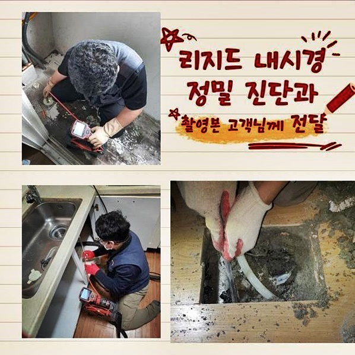
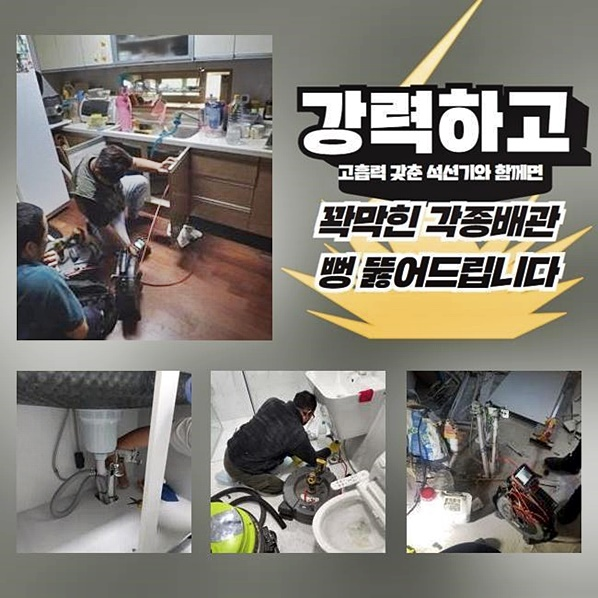
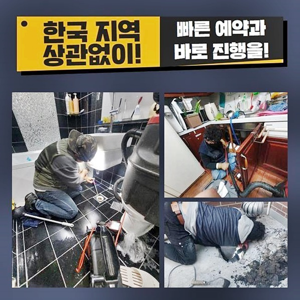
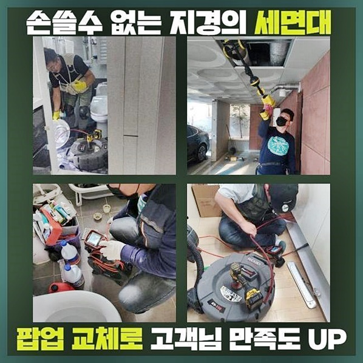
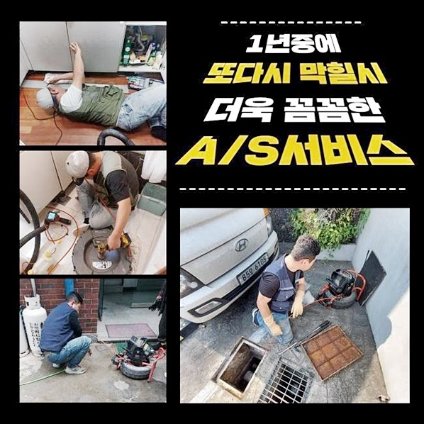
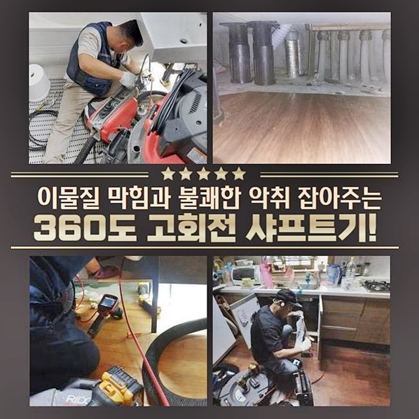
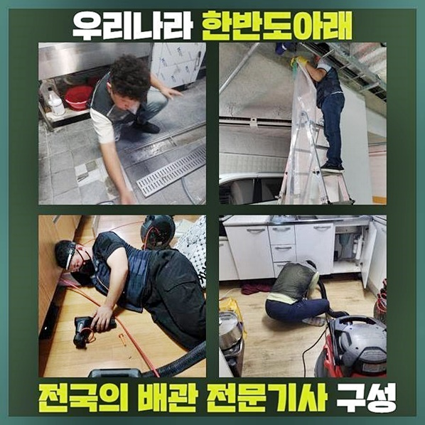

🏠 은평구 녹번동씽크대막힘 증산동 횡주관청소 설비출장
용인시 처인구 배관막힘 전문 시공 후기

📋 작업 개요
- 위치: 용인시 처인구, 수원시 영통구, 화성시 동탄
- 서비스 유형: 배관막힘, 고압세척, 내시경점검
- 작업 일시:
- 업체명: 하수구수사대 (010-5615-2118)
🔍 문제 상황
은평구 녹번동씽크대막힘 증산동 횡주관청소 설비출장
갑자기 하수도에서 문제가 생겨났던 증험이 몇 번쯤은 있으셨을 거라 예상하는데요
집 내부에 있는 하수관이 역류를 하는 바람에 배관 개통을 감행해 나가셨던 기억 또한 알게모르게 있을 것으로 보고 있는데요
배수관으로 머리카락 등이 진입하게 되면 초기엔 문제가 발생하지 않을 수 있겠지만 지속적으로 들어가면 정체가 일어나게 되는거죠
욕실을 이용하지 못한다면 삶의 질 하락 속도가 부풀어질 수밖에 없답니다
차단이 생겨난 파이프를 해결해보고자 막대기도 사용해보고 화학제품까지 활용하였는데 변화가 없었다면 파이프 뚫음 전문가에게 조속히 연락해 해결해 나갈 것을 권합니다
어설픈 대응은 외려 막힘을 부정적으로 변화시킬 수 있다는 것을 무시해 버리시면 추후 더욱 고생할 수 있어요
본 글에서는 배관 세척업무와 연계된 상식과 더불어 막힘이 생긴 형편에서 신속히 처리하는 요령을 말씀드리겠습니다
이번 글에서 소개하여 드릴 지점과 흡사한 차단으로 고생하고 있으시다면 심층적인 대처가 요청되죠
설명해드릴 장소는 사무실 직원의 급한 전화연락을 받은 후 재빠르게 출장하였던 곳이랍니다
공장의 야외에 위치한 관이 정체돼 직원들의 일에 문제가 생겼다고 토로하셨답니다
즉각 그 곳에 갔더니 관이 깊었고 막힌 곳이 멀었답니다 수리가 수월하지 않을 거란 것을 예감하였습니다
즉각 조치를 해야 했기 때문에 중간 지점의 배관을 절제하기로 하였습니다

🔎 원인 분석
💡 전문가 진단: 정밀 진단 장비를 사용하여 슬러지의 고착 여부를 판명하고 타격/세척 작업을 실시했습니다.
배수가 실현되지 않았기에 안을 들여다볼 수 없는 상황이었답니다
이에 면밀한 상태 확인이 난해하므로 내시경cctv를 통하여 내측을 살펴보기로 결정했어요
안에 이물들이 꽉 차 있었죠 정체는 바로 기름때였어요
사장님께서 어제도 분해용 약제를 안에 들이부었으나 변화는 목격할 수 없었던 상황입니다 물이 흘러나갈 수 없도록 안의 찌꺼기들이 차지하고 있는 모양새였어요
내시경cctv를 통하여 좀더 면밀하게 들여다보니 사각집수정에서부터 시관파이프까지 결부된 부근이 막혀버리는 바람에 물이 넘쳐흘렀던 것입니다
예상한 것보다 넓은 부위에서 단단해진 잔재들로 잔뜩 막혀버린 상황이었죠
제품을 생산하는 곳이다보니 유류찌꺼기에 연유한 덩어리들이 상당해보였어요
문의자분에게 중반부의 하수관을 관통하는 것이 효과적이라는 설명을 드린 후 구체적인 내용을 안내 후 본업무에 들어갔어요
업무 진행에 관한 승낙을 얻어낸 다음에 내부에 매립된 배수관부터 밖의 시관로를 소제하였어요
오염수준이 방대하여 일차적인 업무를 한 뒤엔 공장 내부로 이어진 배관도 도구를 사용해서 처리해 주어야 합니다
이 경우엔 고속분쇄용기기를 써주면 됩니다 해당 기기는 상단부위의 쇠사슬이 고속으로 돌며 내측에 고착화된 잔재들을 부수는 노릇을 하고 있어요
간혹가다 손님분들이 고RPM으로 가동되면서 배관 내측에 고장이 발생하는 건 아닐까 우려하시는 경우도 있는데요
어설픈 실력을 바탕으로 주먹구구식으로 가동한다면 배관의 균열이 생겨날 수 있겠으나 우리와 같이 숙련성이 입증된 인원들에겐 합치되지 않는 다는 걸 말씀드려요
배관cctv로 안쪽을 체크하면서 고착화가 심화된 곳과 이유를 분석하고 본시공에 돌입하였죠

🔧 작업 과정
일터에서 배출되는 탁수에 들어간 잔재들이 한가득 들어차있는 모양새였답니다
플렉스샤프트 장비를 통해 찌꺼기를 파쇄하는 모습을 관찰하시고는 묵은 체증이 내려가는 것 같다고 말하셨어요
처치 범위가 꽤 길었으나 타공부분을 기점으로 해서 꼼꼼히 세정을 실시했답니다
제조시설이 있는 처소에선 기름때가 자주 유출되며 간헐적으로 기름 배출이 될 수 있기 때문에 관리 시스템이 작동된다고 하여도 역류 및 악취 발생이 생기는 거예요
지저분한 것들이 청소되자 보통이 아닌 작업인 것 같다면서 흡족해 하시더라고요
해당 지점 전반으로 물이용을 할 수 없는 모습이 된 건 야외에 매립되어 있는 배관쪽에서 막힘이 발생하였기 때문이죠
이런 배관차단 문제에 직면하게 된다면 모든 직원에게 영양을 주게 됩니다 여러가지 잔재들이 겉으로도 발현될 정도로 꽤 누적되어 있었는데요
6개월 이상 특별한 정비를 안했다고 이야기해 주셨어요
이에 배수구를 통해 갖가지 이물들이 적체되었다는 것을 알아챌 수 있었어요
건축물 자체가 낙후되었기에 배수관 역시 노후되었을 확률이 높답니다
이러한 사항도 배관막힘이 일어났을 경우에 심화될 수 있다는 점을 잊지 말아야 합니다
잔재들이 점층적으로 누적되면 물의 흐름을 방해하게 되어 배관부속에도 타격을 줄 수 있고 부식이 생겼었던 부분은 쉽게 깨질 수 있답니다
배관 안의 잔재들은 샤프트분쇄기기를 넣어 족히 처치 가능했으므로 별도의 물세척은 실행하지 않아도 되었죠
플렉스샤프트를 기반으로 기름슬러지를 전반적으로 제거해 나가는 시공을 실행했죠
배수구청소가 평상시 제대로 안된 곳은 쉽게 막혀버릴 수 있고 물이 역행할 수도 있답니다
빠르게 고인물이 사라지지 않고 평소때와 다른 느낌이 든다면 최대한 빠르게 관련업자에게 연락을 취하시는 것이 나아요
한번이라도 역류나 막힘이 나타났다면 날짜가 지나게 되면 악화될 가능성이 높답니다
빠른 해결에 초점을 맞추는 것도 중요하겠으나 숙련된 담당자를 수문하는 일도 필수적이죠
기술수준과 업력과 관계된 부분은 알아보시는 것이 좋습니다
완성도있는 기술력과 도구들 이것을 만족한다면 어떤 난해한 막힘이라도 감당할 수가 있어요
우리는 통수업무가 원활히 이행될 수 있게끔 최신 기기들을 이용하고 있어요
현장상황에 최적합한 장비들을 쓸수 있게 석션기기를 포함한 전문 기계들을 가지고 의뢰자의 장소로 출발하죠


✅ 작업 완료
잔재들을 떠다미는 대책으로 업무를 진행하고 배관전용cctv를 집어 넣고 안쪽에 고형물들이 잔류하고 있지는 않은지 보고 청소를 이어나가고 있어요
이런식으로 공사를 받게 된다면 이물이 쉽게 안쌓여서 재막힘이 일어나는 부분은 근심하지 않아도 됩니다
보는 바와 같이 이물들이 남김없이 소멸되었답니다
특별한 문제가 일어난 게 아니라해도 주기적으로 예방하는 업무를 하는 공장들도 많죠
예약하신 시간에 늦지 않게 방문하고 있으며 주말에도 정상운영되고 있으니 망설이지 말고 문의해 주세요
방관시하지 마시고 이상증세가 포착되면 곧바로 해결해 나가실 것을 권유해 드립니다




⚠️ 하수구 배관 막힘 예방 및 관리 가이드
- ✅ 머리카락, 비닐, 물티슈 등 물에 분해되지 않는 이물질은 절대 흘려보내지 마세요.
- ✅ 기름기 많은 식기는 설거지 전 키친타올로 먼저 기름때를 닦아내세요.
- ✅ 주기적으로 배수구에 뜨거운 물을 가득 부어주어 유지방 고착을 방지하세요.
- ✅ 작업 후 1년 이내 재발 시 무상 A/S 보증 서비스를 제공합니다.
💡 핵심 정리
- 확실한 장비 작업(내시경 점검 및 샤프트 스케일링)으로 원인을 뿌리 뽑습니다.
- 작업 후 1년 이내에 동일한 부위 재발 시 100% 무상 A/S 서비스를 보장합니다.
- 서울 · 경기 · 인천 전 지역에 24시간 언제든 긴급 출동할 수 있도록 항시 대기 중입니다.
❓ 자주 묻는 질문 (FAQ)
🚨 용인시 처인구 배관막힘 문제로 고민이신가요?
정확한 원인 진단과 확실한 시공으로 재발 없는 해결을 약속드립니다.
24시간 긴급 출동 | 서울 · 경기 · 인천 전지역 | 1년 내 재발 시 무상 A/S